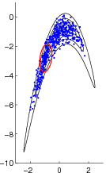

Grapham: graphical models with adaptive random walk Metropolis algorithms
Introduction
Adaptive (non-Markovian) MCMC methods have gained increasing interest in the last few years. The first of the introduced methods, the “Adaptive Metropolis” was shown to provide valid simulation from the target distribution in the seminal paper by Haario, Saksman, and Tamminen (Bernoulli 7, 2001, no. 2). Since then, many similar adaptive methods have been introduced, and their theoretical properties have been studied.
Grapham is a free (GPL'd) experimental tool for MCMC sampling in a hierarchical (or “graphical”) model, using adaptive random-walk-based MCMC methods, including
- covariance adaptation (Haario, Saksman & Tamminen, Bernoulli 7(2) 2001),
- variable blocking/Metropolis-within-Gibbs (e.g. Haario, Laine, Lehtinen, Saksman & Tamminen, J. R. Stat. Soc. Ser. B 66(3), 2004,
- scale adaptation (e.g. Atchadé & Rosenthal, Bernoulli 11(5), 2005),
- delayed rejection (Haario, Laine, Mira & Saksman, Statist. Comput. 16(4), 2006), and
- robust shape adaptation (Vihola, Statist. Comput. 22(5), 2012).
Grapham is implemented in C and uses Lua as a model specification (and scripting) language. There are also simple data import tools for R and Matlab/Octave.
Download
The source distribution is recommended; the binaries may be outdated and may not work on all systems. The source has been compiled succesfully at least with GCC 4.1.2 and 4.0.3 in Linux, and MinGW GCC 3.4.2 in Windows XP (with dlfcn-win32).
- Source: grapham-20130524.tar.gz. You may also need: Grapham was tested to compile with lua-5.1.4.tar.gz, dSFMT-src-2.1.tar.gz, and numlua-0.2.1.tar.gz.
- Binaries:
- Win32: grapham-20101119-win32bin.zip
- Linux x86: grapham-20101119-linux32bin.tar.gz
- Linux x86_64: grapham-20130524-linux64bin.tar.gz
Documents
- Article: Comput. Stat. Data An. 54(1), 2010 (preprint: PDF)
- User guide: PDF
Links
- Programming in Lua (first edition)
- Lua reference card
- Jeffrey Rosenthal's AMCMC package
- The BUGS Project, OpenBUGS, and JAGS
Warning
Please notice that Grapham is experimental code, written by the author primarily for personal use. The software may have undesirable restrictions or inconsistencies, even bugs, and the documentation may not be entirely detailed.
Contact
If you notice some bugs, or have some suggestions, the author of Grapham, Matti Vihola, can be contacted by email <mvihola at iki dot fi>.
The static address of this page is http://iki.fi/mvihola/grapham/